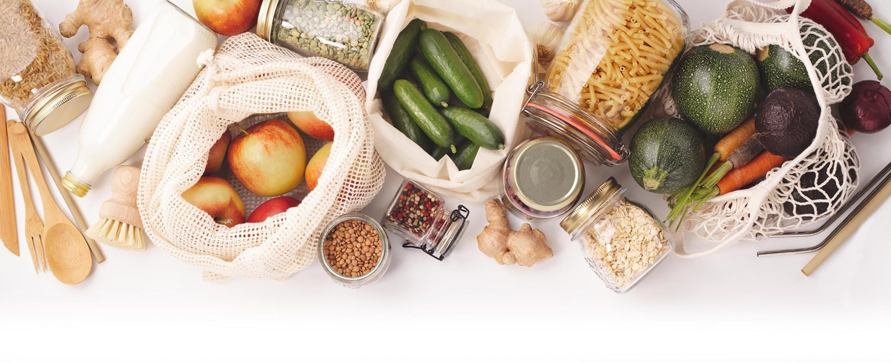
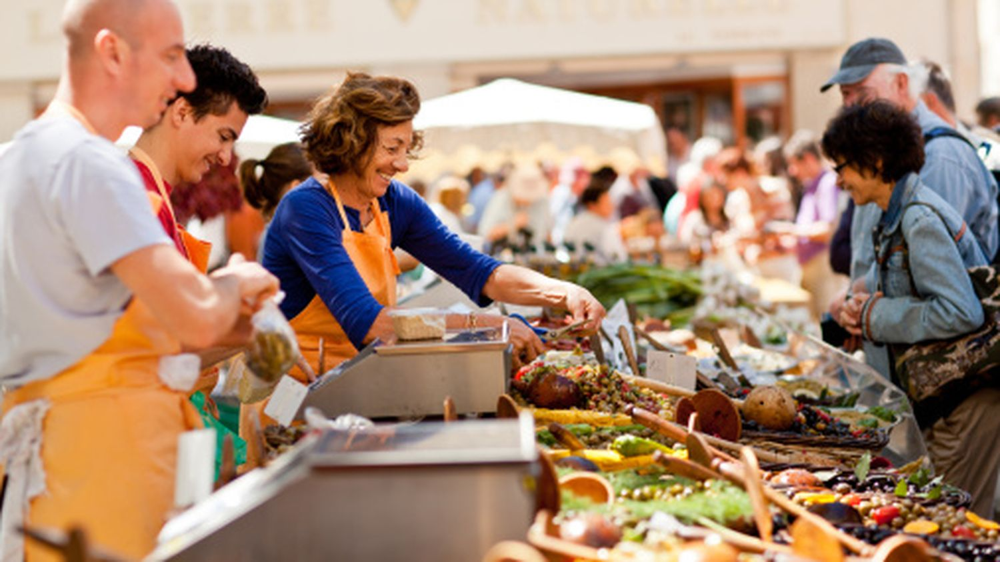

Créée en 2013 à Paris, NO MORE WASTE est une association humanitaire de lutte contre le gaspillage alimentaire et les déchets inutiles. Depuis ses débuts, elle s'est engagée à récupérer les invendus des commerces et des particuliers pour les redistribuer à ceux qui en ont besoin, tout en sensibilisant la population à l'importance de consommer de manière responsable.
En rejoignant NO MORE WASTE, vous devenez bien plus qu'un simple membre : vous faites partie d'une communauté solidaire, déterminée à faire une réelle différence dans la lutte contre le gaspillage alimentaire. Chaque jour, nos actions permettent de sauver des tonnes de nourriture, d'aider les plus démunis et de soutenir les producteurs locaux à travers des initiatives concrètes et accessibles à tous.
En vous inscrivant dès aujourd'hui, vous aurez accès à des services exclusifs tels que des paniers alimentaires à moindre coût, des cours de cuisine anti-gaspi, des échanges de services solidaires, et bien plus encore. Que vous souhaitiez réduire votre impact écologique, participer à des actions locales ou simplement économiser de l'argent tout en faisant un geste pour la planète, NO MORE WASTE est l'endroit idéal pour vous.
Faites partie du changement. Ensemble, nous pouvons réduire le gaspillage, encourager une consommation plus responsable et créer un avenir durable pour tous. Rejoignez-nous dès maintenant !
À qui profite NO MORE WASTE ?

À l'environnement
Produits locaux provenant de l'agriculture durable et écologique.

Aux producteurs locaux
Ils reçoivent un prix équitable pour leurs produits, favorisant le développement des économies locales.
Aux consommateurs
Consommez des produits plus sains et payez des prix plus bas.
Nous connectons les producteurs locaux avec les consommateurs finaux
Pour avoir un impact et réaliser un changement réel contre le gaspillage alimentaire...
Paniers périodiques et groupes de consommation
Pour avoir un impact et réaliser un changement réel contre le gaspillage alimentaire...